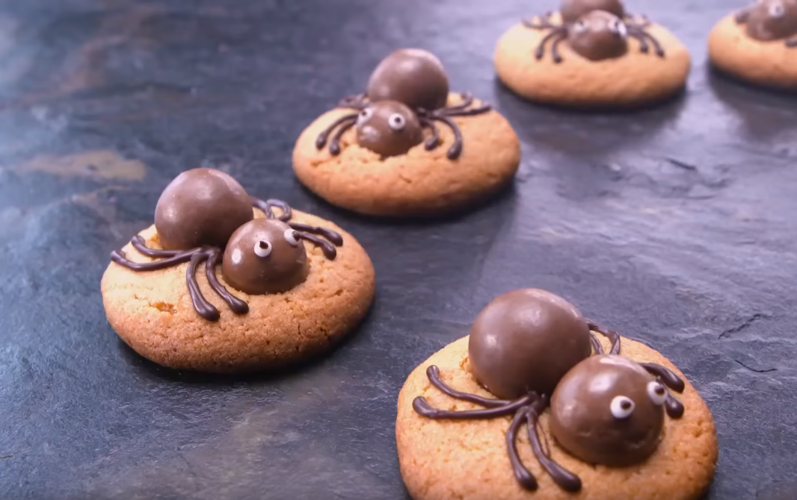

These spooky spider cookies are entertaining for little ones and adults to make together. From pushing chocolate candies into warm cookies, to drawing spider legs with chocolate and making silly eyes, there's plenty of fun for everyone.
Pumpkin Rolls
Make a batch of Ree's fall-inspired cinnamon rolls for brunch this weekend, or as a welcome-home snack for your marauding trick-or-treaters.
Mummy Pies
This easy, Halloween-inspired recipe can be made ahead and served later as a scary-good party dessert.

Ingredients:
One 5-ounce box small ball-shaped chocolates, such as malted milk balls
3/4 cup all-purpose flour
1/4 teaspoon baking soda
Pinch of fine salt
1/2 cup granulated sugar
4 tablespoons unsalted butter, at room temperature
1/2 teaspoon pure vanilla extract
1 large egg
1/2 cup smooth peanut butter
2 ounces semisweet chocolate
1 small tube white cake decorating gel
Directions:
1. Position oven racks in the top and bottom thirds of the oven and preheat to 375 degrees fahrenheit. Line 2 baking sheets with parchment paper.
2. Separate the chocolate candy balls into larger and smaller balls. The larger balls will make up the spider bodies and the smaller balls the heads.
3. Whisk together the flour, baking soda and salt in a small bowl. Cream the sugar and butter in a medium bowl with an electric mixer on medium-high speed until light and fluffy, 3 to 4 minutes. Add the vanilla and egg and mix until thoroughly combined, about 1 minute. Add the peanut butter and mix until creamy, about 1 minute. Turn the mixer speed down to low and add half of the flour mixture. Beat on medium until incorporated, then turn the speed down to low again and add the rest of the flour mixture. Beat on medium until incorporated.
4. Roll the dough by hand into 1-inch balls, place about 1 inch apart on the prepared baking sheets and bake, rotating the pans halfway through, until the cookies are light golden brown and have spread to about 2 incheswide, about 16 minutes. The cookies are done when they smell very peanut buttery and the tops feel dry and slightly firm when pressed with fingers.
5. Meanwhile, melt the chocolate over a double boiler. Remove from the heat and let cool briefly so that it is slightly thickened but still pipeable.
6. When the cookies are done, remove them from the oven and transfer them to a cooling rack. Immediately push 2 chocolate candies directly into each hot cookies, putting a smaller chocolate ball toward the edge of the cookie and a larger chocolate ball directly behind it in the center of the cookie.
7. When the melted chocolate has thickened slightly, put it into a plastic bag and cut a small hole in the corner to create a piping bag. Pipe 8 legs on each cookie, starting from the point where the 2 chocolate candies meet. Pipe the front 4 legs so that they curve up toward the head and the back 4 legs so that they curve backward beyond the body. Reserve the remaining chocolate in the piping bag for the pupils of the eyes.
8.To make eyes, pipe two 1/4-inch circles on the "heads" of each spider with the cake decorating gel. Pipe a tiny dot of the reserved melted chocolate in the center of each to make the pupils.